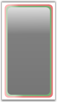

You can set some properties on this gauge to change the frame appearance. Rather than setting properties on the linear gauge individually, you can use resources to define the gauge properties for the entire application. Define Application.Resources block to specify the style for linear gauge control and add the following markup in it.
|
[XAML]
<Application x:Class="TestApplication.App" xmlns="http://schemas.microsoft.com/winfx/2006/xaml/presentation" xmlns:x="http://schemas.microsoft.com/winfx/2006/xaml" xmlns:syncfusion="http://schemas.syncfusion.com/wpf" StartupUri="Window1.xaml"> <Application.Resources> <Style TargetType="{x:Type syncfusion:LinearGauge}"> <Setter Property="FirstFrameFillColor" Value="Red"/> <Setter Property="SecondFrameFillColor" Value="Green"/> <Setter Property="CenterFrameFillColor" Value="Black"/> </Style> </Application.Resources> </Application> |
The TargetType property specifies the style that applies to all objects of type 'Linear Gauge'. Each Setter sets a different property value for the Style in Linear Gauge. In the application, the LinearGauge has FirstFrameFillColor as Red, SecondFrameFillColor as Green and CenterFrameFillColor as Black. The output of the application will look like the following image.

Figure 61: Linear Gauge with Fill Colors
 Built-in Frames
Built-in Frames